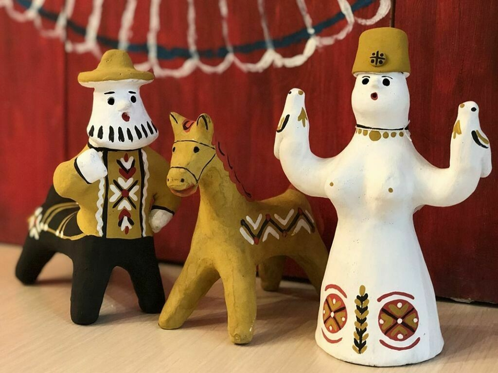
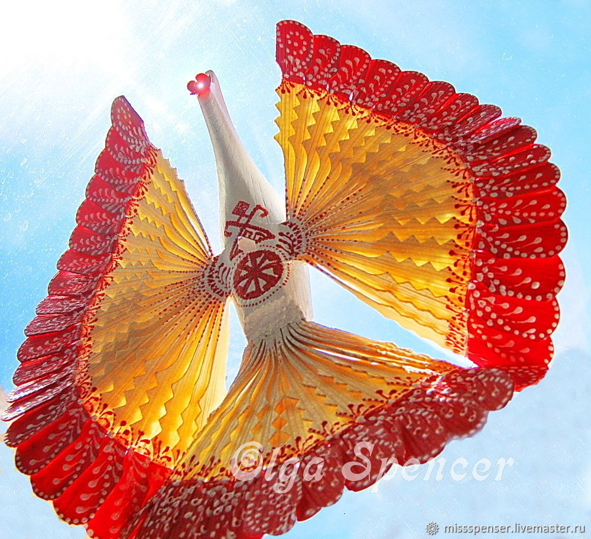
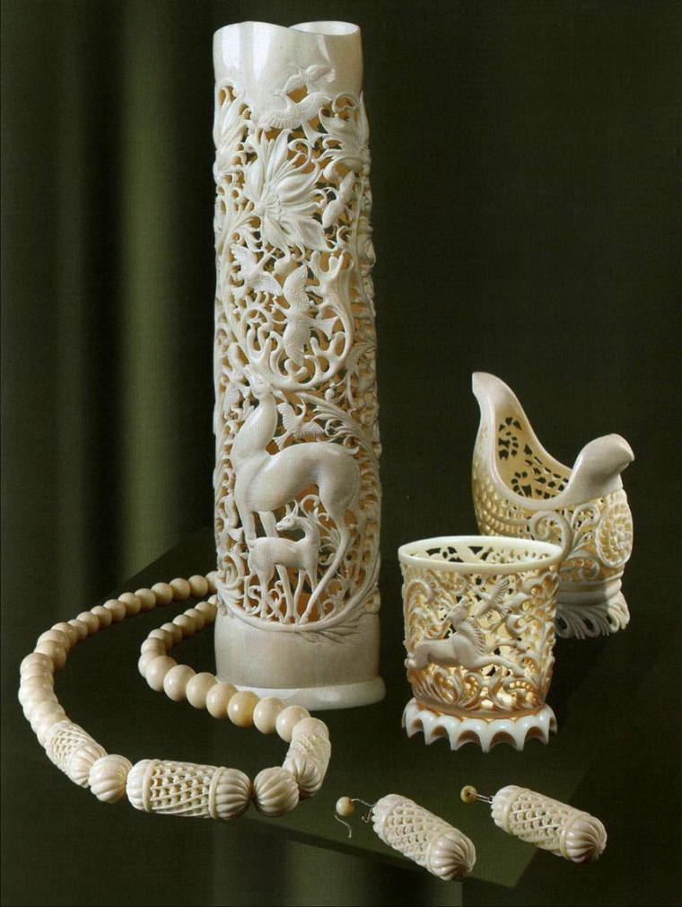
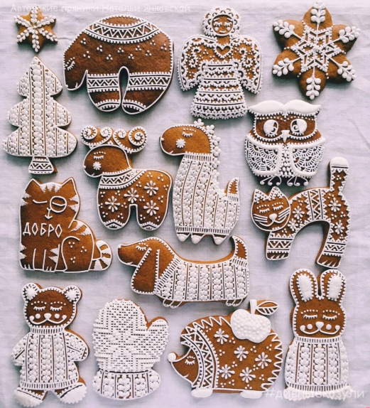
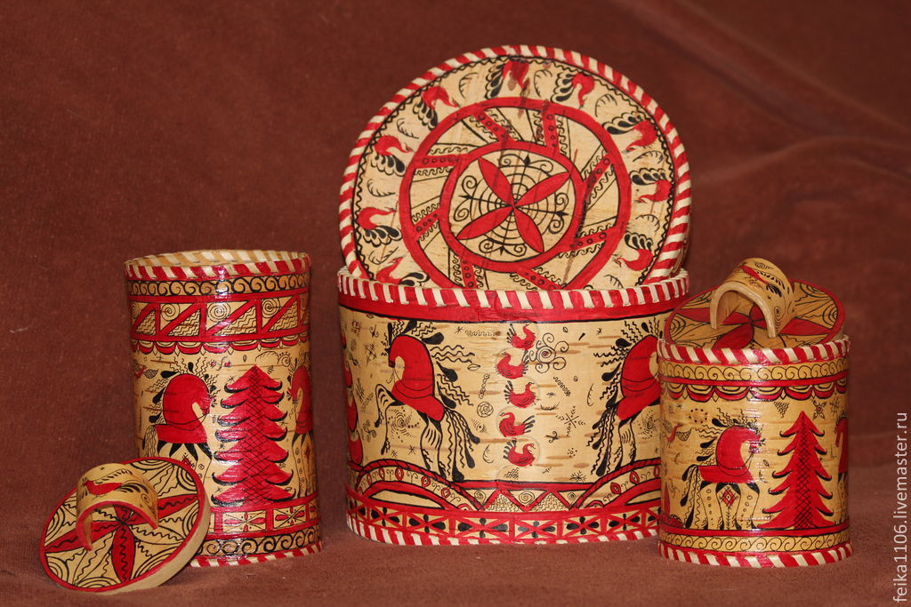
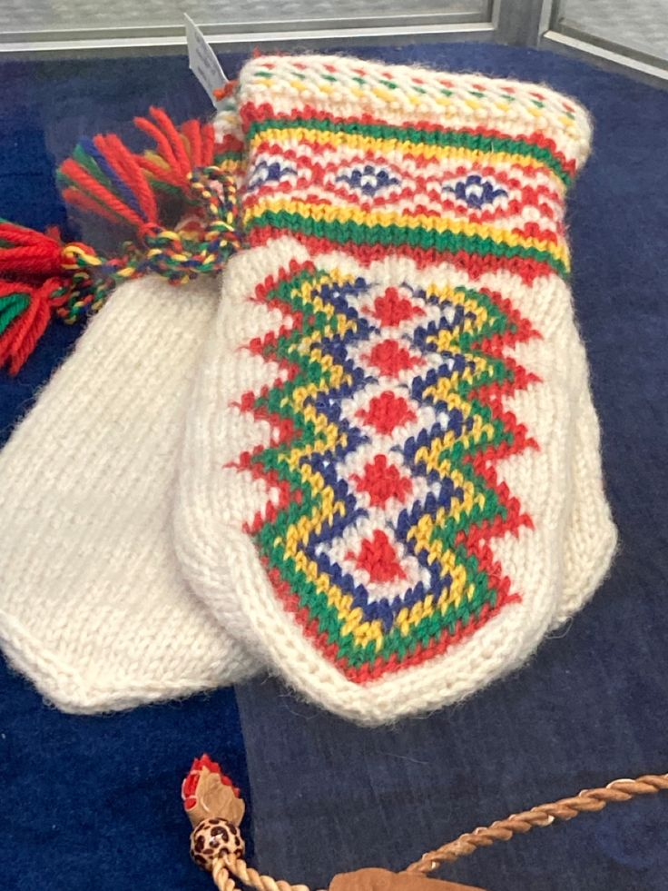

г. КаргопольКаргопольская глиняная игрушка
Традиционная лепная игрушка из местной красной глины: Полкан, Берегиня, крестьянки и медведи с архаичным солярным орнаментом.
Подлинные ремесленные изделия Архангельской области, сувенирные мастерские с переходом на их официальные ресурсы и живые культурные традиции Русского Севера.
Нажмите на кнопку карточки, чтобы перейти на официальный сайт или страницу мастерской для покупки сувениров и записи

г. КаргопольТрадиционная лепная игрушка из местной красной глины: Полкан, Берегиня, крестьянки и медведи с архаичным солярным орнаментом.

г. АрхангельскДомашний деревянный оберег, вырезанный из цельного соснового бруска без единого гвоздя и клея с ажурным веерным оперением.

с. ЛомоносовоЗнаменитый художественный промысел XVII века с тончайшей ажурной резьбой по кости и бивню мамонта с родины М.В. Ломоносова.

г. Архангельск · ЧумбаровкаРасписные обрядовые пряники из жжёного сахара с корицей и гвоздикой — главный гастрономический символ Поморья.

Лешуконский и Мезенский округаДревняя графическая роспись по дереву в двух цветах (сажа и красная охра) с бегущими конями, оленями и утицами.

Пинежье и АрхангельскТрадиционные поморские шерстяные варежки с геометрическим орнаментом, браные скатерти и половики ручной работы.
Нематериальное культурное наследие Поморья, которое можно увидеть и услышать сегодня
Уникальная конструктивная и живописная традиция Кенозерья и Каргополья: перекрытие деревянного храма в виде усечённой пирамиды с радиальными гранями, расписанными библейскими сюжетами.
Наследие сказителей М.Д. Кривополеновой, С.Г. Писахова и Б.В. Шергина: особая поморская говоря, былины и северные сказки, звучащие на фестивалях в Архангельске и Пинежье.
Традиции строительства деревянных парусных судов (кочей и карбасов) без железных гвоздей, морские лоции и освоение Груманта (Шпицбергена) и Новой Земли.